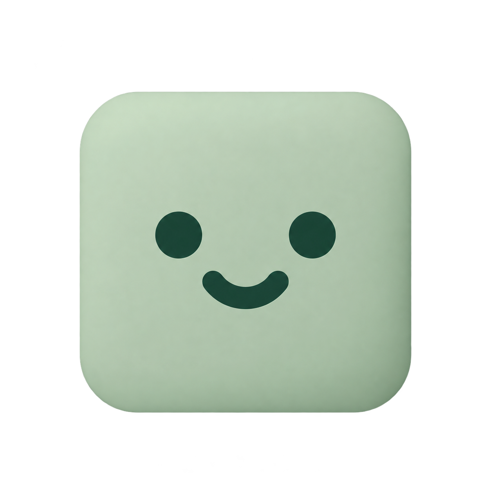

Compare the earlier shallow shadow with the new deeper shadow and matte Classic. Original and Sage below. No Dock tile.
A narrow sage edge, about 2% of the body width.
A slightly deeper sage offset, targeting 4% of the body width.
Matte shading and rounded edges on the forest-green box.
Original baseline

Light sage, a forest face, and a restrained matte finish.